一想到你在关注我，就忍不住有点紧张～
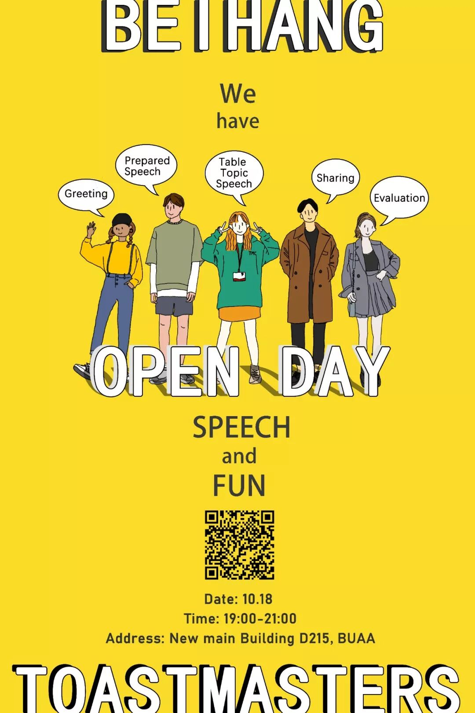
Hi 很高兴遇见你，
我的新朋友，
我想，你一定会问
“咦，北航Toastmasters是什么？”
北航Toastmasters英语演讲俱乐部是一个面向校内提供专业化、高标准英语交流的平台，在北航研究生团委的指导下，旨在提升公共演讲和人际沟通能力，培养领导能力，增强自信力，并结识有共同追求的朋友的中英文演讲平台。
还记得你说
“我有一个愿望，
我想提高英语，
想完成一个自信的pre，
还想今年脱单！
唉，但是找不到方法”
“那就来北航Toastmasters吧！”
北航Toastmasters每周五晚在北航教室内举办会议，每一次会议，主要分为三个部分，即兴演讲环节、备稿演讲环节和点评环节。每周更换活动主题，多个角色构成的专业化综合评价体系会给予演讲者详细点评，反馈便条和有奖问答的特色设计增强了会议的欢乐气氛，会议前、会议间歇和会后均提供自由交流机会。
你知道吗？
为了迎接你的到来，
我与其他小伙伴一起，
已经为你准备好了
很多的惊喜

“我可以帮你实现愿望哦，我有…”
中英文演讲平台
每周会议由数十个角色组成，大部分会由会员俱乐部成员担任，借此锻炼公众演讲能力。另外，还有不限角色的即兴演讲环节，每个人都可以上台一展风采。我们还会定期举办中英文演讲比赛，快速提升演讲能力，并有机会与其他俱乐部优秀的演讲人同台PK,一起交流。
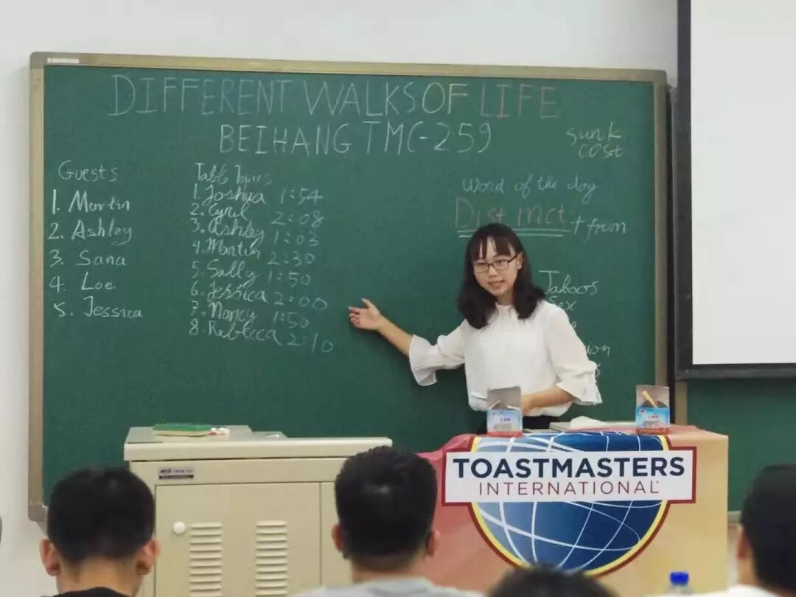
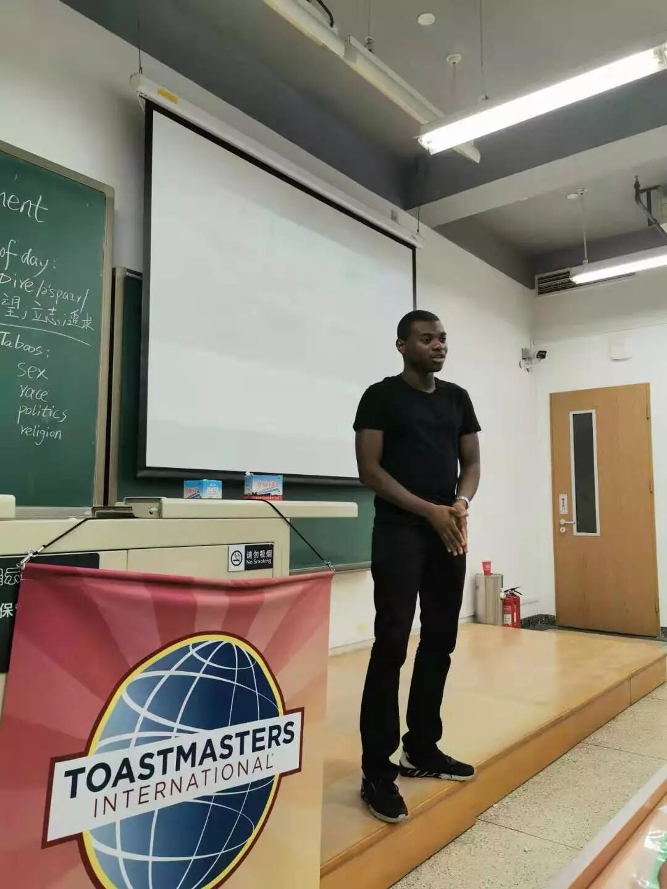
与大咖亲密接触的机会
俱乐部每个月都会邀请头马届的大咖来我们俱乐部进行分享，主题基本围绕演讲技巧，角色担任展开。另外，我们下周五，也就是25号，会邀请2018年全球英文演讲比赛亚军——Sherrie Su来分享！一定不要错过！
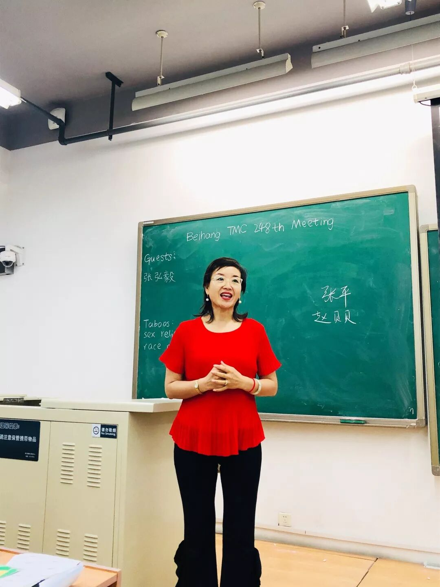
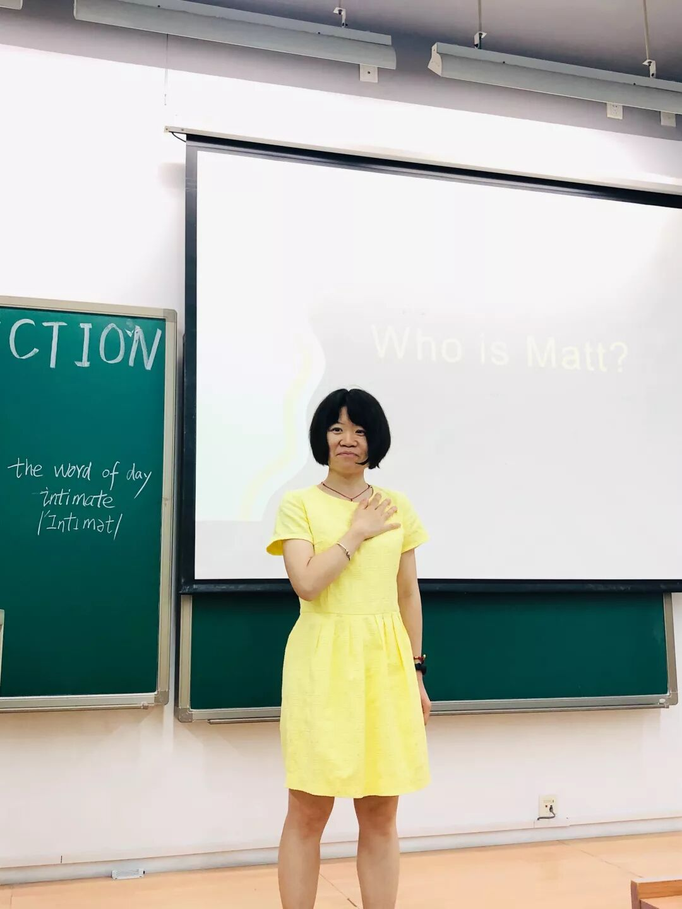
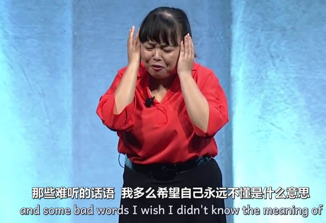
活动策划培养领导力
我们俱乐部都是由自己的成员运营的，各司其职，将俱乐部打造的有声有色。只要你有一份热忱的心，我们头马俱乐部官员团队永远欢迎你！
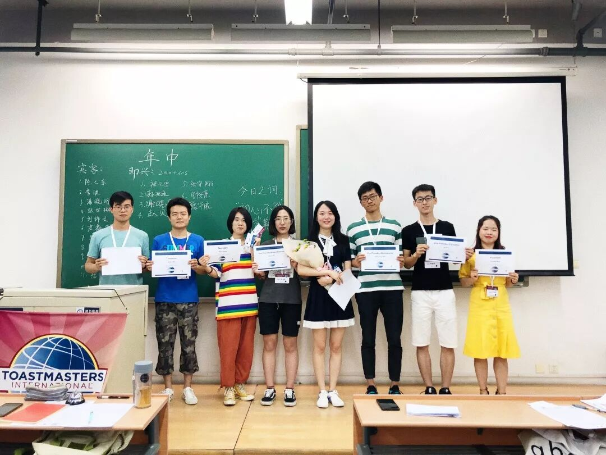
丰富的出游
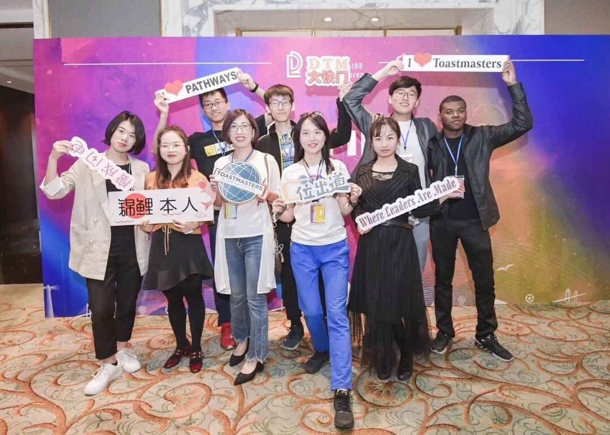
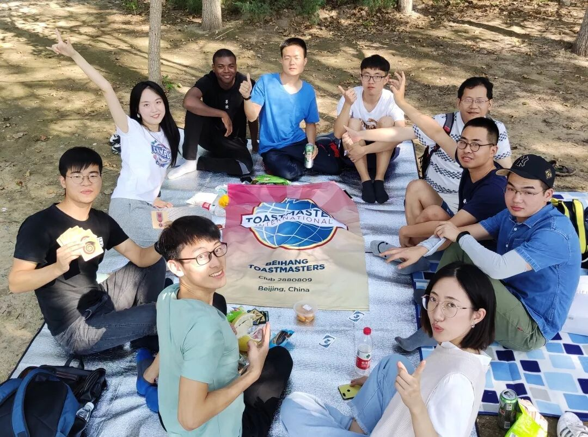
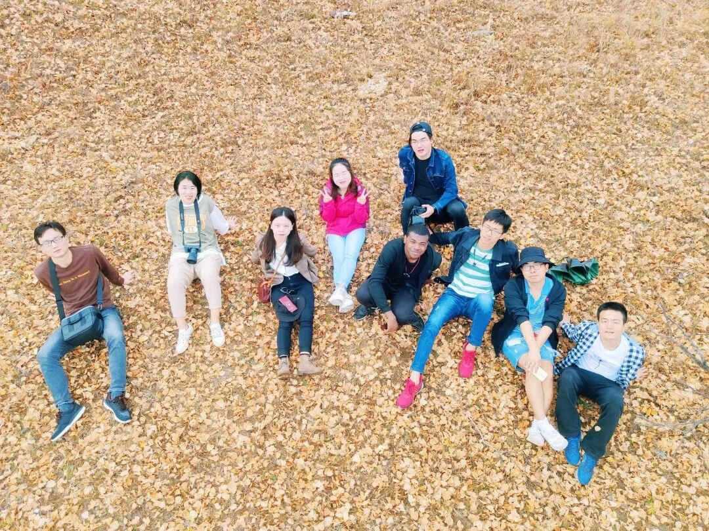
我们的小伙伴不要太多！短短一年，我们就一起踏过太多地方，小伙伴的家里，大连头马峰会，世园会，巴厘岛，奥森公园，乌兰布统草原……
每周羽毛球活动
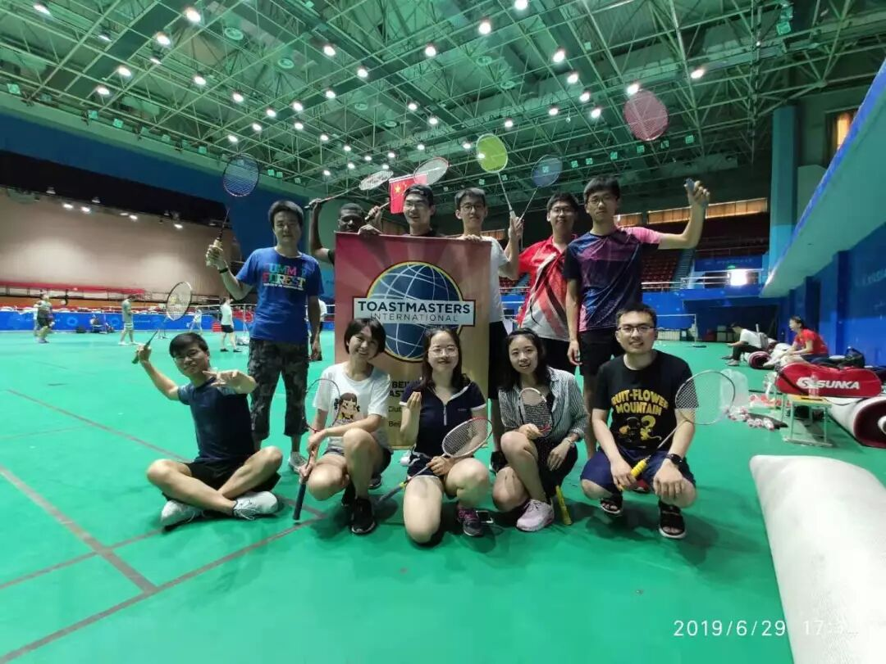
每周我们至少相聚两次，一次是会议，一次就是羽毛球活动啦。我们每周都会组织一场羽毛球活动，为大家提供锻炼身体，增进会员间感情的机会。
在这里，我们一起成长，一起学习演讲，
提高沟通能力和领导力，
结识一群志同道合来自五湖四海的朋友，
互相鼓励，悉心聆听，收获颇丰。
也许，我们不是最会说，但一定最敢说
我们会怀着感恩的心，感恩遇见
陪着北航头马，慢慢变老
10月18号，是我们的openday开放日，这里，诚挚邀请各位对我们俱乐部感兴趣的同学，于本周五晚七点，带上瓜子花生，加入我们的会议！
时间：10月18日 晚七点
地点：北航新主楼D215
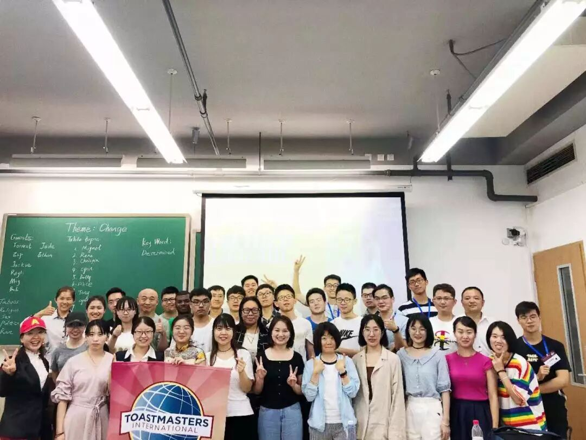
我把我的联系方式，
都写在下面啦
如果你需要我，
那就不要犹豫地
长按下去吧
北航Tosatmasters
识别二维码加入10月18日迎新群
或添加会员副主席Chen微信加入我们
Chen微信：william157400
图|文：Chen/Cynthia
排版：Amber
https://mp.weixin.qq.com/s/wxLkq0q5gxnR-dqeUKV2Og
本页为抢救式本地归档，图文已永久保存。